Přinášíme školám a školkám chytré technologie — od osvětlení po monitoring spotřeby. Vše na jedné platformě, s vlastní IoT infrastrukturou nezávislou na školní síti.
Automatické stmívání podle denního světla a přítomnosti osob. Méně únavy žáků, nižší spotřeba energie.
Každá místnost samostatně. Prázdné třídy, víkendy a prázdniny se vytápějí na minimum automaticky.
Ředitel i zřizovatel vidí v reálném čase kde se plýtvá. Jasná data pro rozhodování a dotační reporting.
Senzory ve třídách upozorní na špatnou kvalitu vzduchu. Vědecky prokázaný vliv na pozornost a výsledky žáků.
Dodáváme kompletní síťovou infrastrukturu — nezávislou na školní WiFi. IT správce školy se nestará.
Home Assistant — žádná závislost na jednom výrobci. Kdykoli rozšiřitelné bez výměny celého systému.
Součástí každé spolupráce je přednáška pro žáky — bez firemní propagace, bez reklamy. Otevřený rozhovor o tom, co žáky čeká. Majitel Veltrix mluví ze své vlastní zkušenosti jako mladý podnikatel.
Vybereme konkrétní objekt — ověříme model naživo a vytvoříme referenci.
Zmapujeme dostupné dotace — OPŽP, IROP, Národní plán obnovy pro energetické úspory škol.
Jak nastavit opakující se proces — jeden kontakt, více škol, standardizovaná nabídka.